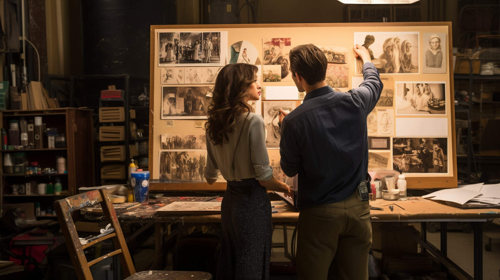

In film and television, the production designer is the individual responsible for the overall aesthetic of the story. The production design gives the viewers a sense of the time period, the plot location, and character actions and feelings. Working directly with the director, cinematographer, and producer, production designers have a key creative role in the creation of motion pictures and television. The term production designer was coined by William Cameron Menzies while he was working on the film Gone with the Wind.[1] Production designers are commonly confused with art directors as the roles have similar responsibilities. Production designers decide the visual concept and deal with the many and varied logistics of filmmaking including, schedules, budgets, and staffing. Art directors manage the process of making the visuals, which is done by concept artists, graphic designers, set designers, costume designers, lighting designers, etc.[3] The production designer and the art director lead a team of individuals to assist with the visual component of the film. Depending on the size of the production the rest of the team can include set decorators, buyers, dressers, runners, graphic designers, drafts people, props makers, and set builders.
Production design plays an essential role in storytelling, for instance, in the movie Titanic, when the characters Jack and Rose are in the cold water after the ship sank, we know that they are cold because of the setting: it is nighttime and there is ice on their hair. A more specific example is The Wizard of Oz, in which we know the story takes place on a farm because of the bale of hay Dorothy leans on and the animals around, as well as the typical wooden fence. In the scene in which Dorothy's dog is taken away, we know that it happens in her aunt and uncle's house, which adds more tension because her beloved friend, Toto is not killed, lost or kidnapped on the street, but is forced to leave by an outsider, Ms. Gulch, who enters Dorothy's private and safe zone (her home). Jane Barnwell states that the place the characters exist in gives information about them and enhances the fluency of the narrative (175).[5] Imagine Dorothy's home was dirty and everyone in her house were dressed untidily, the viewer would have supported the outsider instead, perhaps thinking that the outsider in a way, rescued the dog from an unhealthy environment. Additionally, the characters' clothing, especially that of Ms. Gulch, makes the description "own half the county" more reliable in portraying Ms. Gulch, and also supports the reason why Dorothy cannot rebel against Ms. Gulch by making the dog stay. However, this does not mean that the setting or costume should be extremely detailed and cluttered with information. The goal is to not let the viewer notice these elements, which, however, is how production design works. Jon Boorstin states in his book, Making Movies Work Thinking Like a Filmmaker, that the background, the camera motion or even the sound effect is considered well-done if the viewer does not notice their appearance.
In the United States and British Columbia, production designers are represented by several local unions of the International Alliance of Theatrical Stage Employees (IATSE). Local 800, the Art Directors Guild, represents production designers in the U.S., with the exception of New York City and its vicinity.[7] Those members are represented by Local 829, the United Scenic Artists. In the rest of Canada, production designers are represented by the Directors Guild of Canada. In the United Kingdom, members of the art department are represented by the non-union British Film Designers Guild.
The production design credit must be requested by a film's producer, prior to completion of photography, and submitted to the Art Directors Guild Board of Directors for the credit approval.
